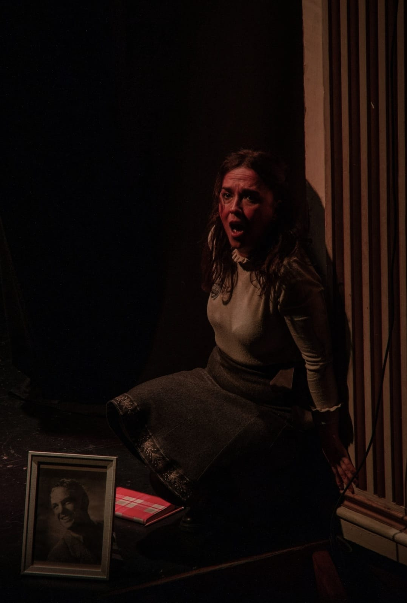
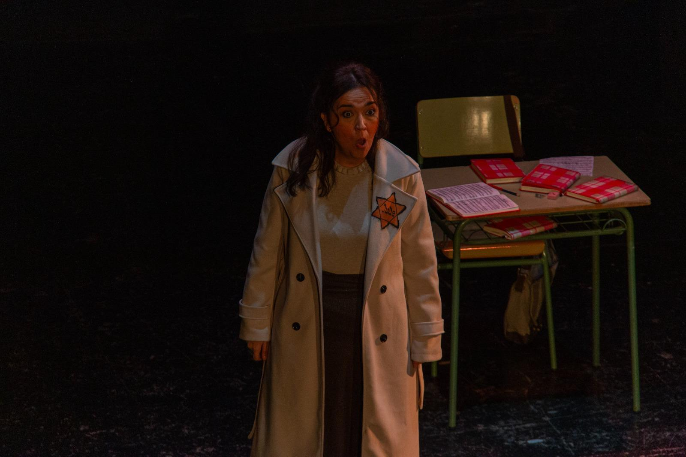
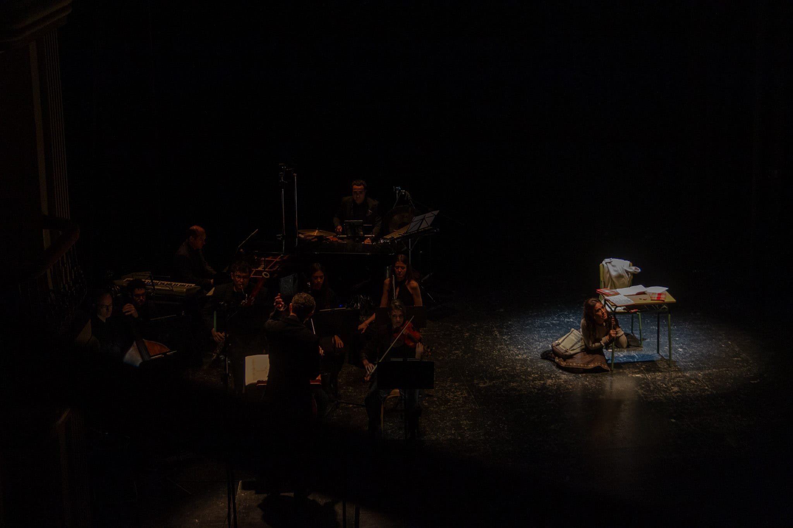
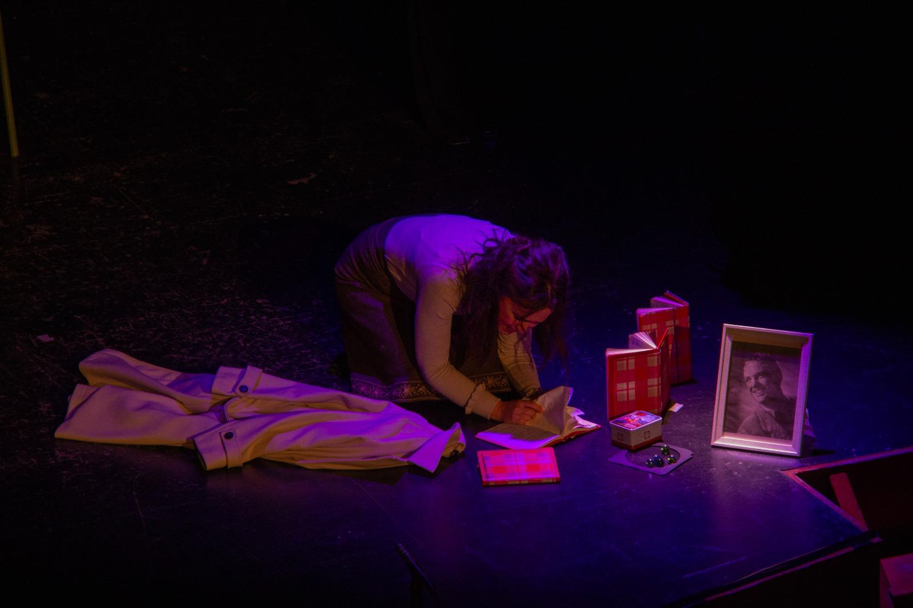
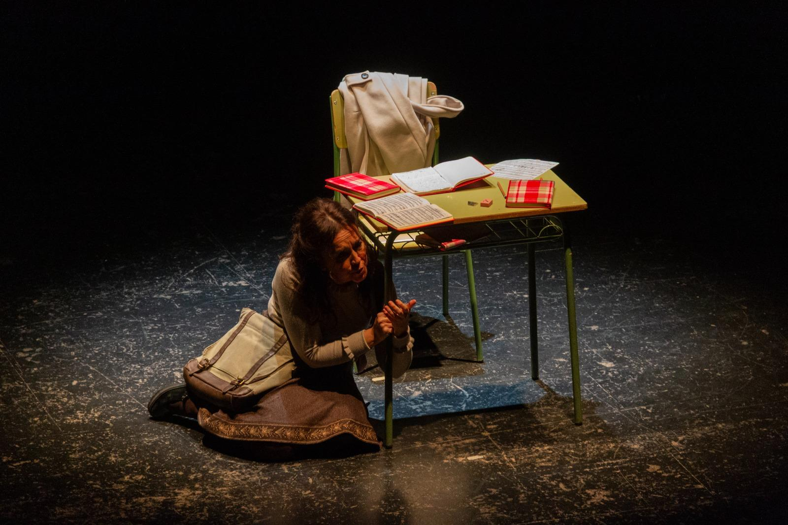

Ópera
Música y libreto de Grigori Frid
El peregrinaje vital de Ana Frank, autora del mundialmente famoso Diario que aún hoy supone un hito como esperanzado emblema de la solidaridad y la tolerancia mutuas, se erige como principal vehículo operístico para Grigori Frid a través de este novedoso montaje que aúna simbolismo, expresividad o incluso ciertos elementos tragicómicos destinados a atenuar la tragedia omnipresente. Sorteando fronteras y prejuicios, Das Tagebuch der Anne Frank, en suma, proporciona una impactante experiencia que trasciende música, escena o argumento, apelando a nuestra conciencia universal, a nuestra empatía, a nuestro propio e intransferible dolor.
Esta ópera de cámara no se circunscribe al pasado: alza el vuelo para sortear tiempo o espacio adentrándose en un presente donde aún hoy campa a sus anchas la sombra de un exterminio constante y multidireccional.
Que la voz de una inocente acalle el griterío de los culpables. Atrapada en un encierro asfixiante o –tal vez– en sí misma, la niña Ana Frank se ve obligada a madurar de pronto, lo que refleja en las páginas de un diario que es confesor implacable, que es cárcel férrea, que es grito de socorro y liberación, erigiéndose como voz emancipadora de todas las personas de bien, de todos los pueblos del mundo.
— Jorge Moreno Pieiga
La ópera de Frid, «El diario de Ana Frank» constituye hoy en día un binomio inseparable con el diario de esta niña universal, que encarna en su joven y trágica infancia, uno de los alegatos más importantes contra la barbarie, la crueldad y la guerra.
La música de la ópera es de una unidad férrea, casi parece emular ese pequeño habitáculo de Amsterdam donde se escondían esas almas marcadas por el destino. El ritmo es casi siempre binario y constante, a veces da una sensación de obscena banalidad y nos encuadra en un espacio determinado y en un tiempo que parece avanzar a paso ligero de soldado desfilando hacia lo irremisible. Hay varios motivos musicales, recurrentes en la pieza, pero el principal, con una melodía de sol, la, la bemol, mi bemol, recorre nuestra espina dorsal como un escalofrío durante toda la pieza.
Este motivo inquietante es quizá un homenaje a Shostakovich que tiene otro célebre sobre su propio nombre re-mi bemol, do, si. Con cuatro notas ya nos sitúa en un ambiente opresivo, curiosamente el de los nazis en la ópera y el soviético en su propia vida. En la ópera se combina la luz y la oscuridad, aunque el ambiente es mayoritariamente dramático, pero también podemos ver la inocencia y la sonrisa de una niña. Hay momentos para un vals inquietante, casi apocalíptico, para una marcha marcial hacia la muerte, para música de cabaret, para momentos místicos, para el humor y el reflejo de lo cotidiano.
El empleo del timbre en la obra es muy característico; la celesta y la campana buscan ese misticismo y religiosidad, y la trompeta, el ave de mal agüero que hace presagiar la desgracia. Frid, que fue pionero y a la vez educado por su abuelo en la religión judía, tuvo que vivir con ese dilema entre la vida y la muerte, entre Dios y su negación, y fue capaz de ver luz en tanta oscuridad. Así, la música navega también entre la atonalidad y la tonalidad.
«La riqueza, la gloria, todo eso se puede perder… sin embargo, la felicidad del corazón puede abandonarte por un pequeño tiempo, pero luego despertará de nuevo y te hará feliz para toda la vida… hasta que ese momento llegue, puedes contemplar tranquila el cielo…»
Últimas palabras de Ana Frank en la ópera
Estas son las últimas palabras de Ana Frank en la ópera, y a mi entender, como toda obra de arte verdadera, son una pregunta abierta, no una respuesta, a cada uno de nosotros.
— Alexis Soriano

Ana Frank se ocultó con su familia en una buhardilla secreta en Ámsterdam para no ser capturados por los nazis. Allí día tras día, fue escribiendo su diario secreto. Fueron descubiertos y ella y su hermana murieron de tifus y de frío en el campo de concentración de Bergen-Belsen en 1945, en unas tiendas de campaña en las que pasaron sus últimas horas de vida.
Grigori Frid nació en el seno de una familia cultivada. Su madre, pianista profesional, terminó la carrera de piano en Moscú y su padre, periodista y crítico musical, tocaba el violín. Por su casa pasaron legendarios músicos como un joven Wladimir Horowitz o el talentoso y aún desconocido violinista Nathan Milstein.
Frid comenzó a tomarse en serio sus inclinaciones musicales y empezó a componer sus primeras piezas. Gracias a una carta de recomendación, ingresó en el conservatorio de Moscú y compuso su primera sinfonía que enseñó al propio Shostakovich, quien lo felicitó de corazón; desgraciadamente, al poco tiempo, empezó la guerra y tuvo que alistarse y dejar toda su carrera en suspenso.
Frid fue un artista extremadamente generoso y gentil. Sirvió nada menos que 6 años en el frente, fue herido por metralla y condecorado. Fue pionero y a la vez sufrió el antisemitismo de aquella época en la URSS, ocultando su apellido para evitar problemas. Fundó el club para los jóvenes músicos en Moscú, un lugar de encuentro donde pasaron Prokofiev, Schnitke, Denisov, y otros muchos. Escribió para todos los géneros, pero fueron sus dos óperas de cámara — Las cartas de Van Gogh y El diario de Ana Frank — las que tuvieron más éxito internacional. Vivió 97 años y murió en Moscú el 22 de septiembre de 2012, el mismo día en que nació. En España es un absoluto desconocido y queremos contribuir a difundir su obra.




Material audiovisual
Estreno de la versión escénica · En alemán, subtitulada
| Director musical y artístico | Alexis Soriano |
| Soprano | Auxiliadora Toledano |
| Director escénico y dramaturgia | Jorge Moreno Pieiga |
| Iluminación, subtítulos, video | Mario Copete |
| Orquesta | Ensemble Solaris (9 músicos) |
Caché
14.800 €
+ IVA
Estreno de la versión escénica